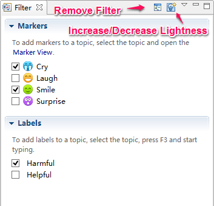

フィルター
XMind の強力なフィルター機能は、大規模で複雑なマップのために、大きな生産性の向上を提供しています。フィルタリングは、ユーザーがより速く情報のレビューと理解を容易にするために、マーカーやラベルなどの特定のトピックの属性に基づいた、マップの内容の特定の部分のみを表示することができます。簡単なクイックフィルター、より高度なフィルター、フィルターの削除ができます。
クイック フィルター:- エディターウィンドウの下部にフィルターアイコンをクリックします。
- ドロップダウンリストで対象のマーカーを選択します。
- フィルター選択されたトピックが強調表示されます。
- もう一度、フィルター アイコンをクリックして、コントラスト効果を高めることができます。
- フィルターのアイコンをダブルクリックして、フィルターを削除できます。

- メニューの[表示]→[詳細フィルター]を選び、詳細フィルタービュー を開きます。
- フィルターとして使用するマーカーまたはラベルを選択します。
- 選択したマーカーとラベルがつけられたトピックがハイライト表示されます。
- 詳細フィルタービュー、[すべてを表示]と[明度を変更]が使用できます。 
注: クイック フィルターを使用して、選択できるのは、一度に一つのマーカーだけです。詳細フィルターを使用すると、一度に複数の属性を選択できます。